Расчет характеристик
синхронного трехфазного двигателя
с многополюсным ротором на постоянных магнитах
1. Введение
Появление высококоэрцитивных постоянных магнитов и, в особенности, редкоземельных магнитов с высокими значениями магнитной энергии позволяет в ряде случаев избавиться от токовых обмоток на роторе электрической машины без ухудшения ее характеристик. Электромашина с ротором на постоянных магнитах не имеет коллектора и щеток, что позволяет существенно повысить ее надежность и время работы без обслуживания и ремонта. Одной из частных задач является конструирование синхронных трехфазных исполнительных двигателей с многополюсным ротором, обладающих достаточно высоким значением момента на валу, что позволяет использовать их непосредственно в качестве привода, обходясь без редуктора.
2. Конструкция двигателя
Поперечное сечение двигателя показано на рис. 2.1.
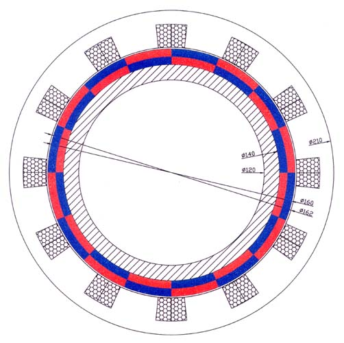
Рис. 2.1. Поперечное сечение синхронного трехфазного двигателя с 16-полюсным ротором на постоянных магнитах.
Двигатель состоит из ротора и статора. В конструкцию ротора входит стальной цилиндр (внешний диаметр 140 мм, толщина стенки 10 мм), на котором крепятся 16 постоянных магнитов состава неодим-железо-бор (Ne-Fe-B, остаточная индукция примерно 1.2 Тл, коэрцитивная сила по намагниченности примерно 1000 кА/м) в виде подковообразных сегментов высотой 10 мм с чередующимся направлением намагниченности. Внешний диаметр ротора 160 мм. Высота ротора 50 мм. Статор представляет собой стальной цилиндр (набран из листовой электротехнической стали) с 12-ю внутренними прорезями, в которые помещаются обмотки (3 фазы по 4 последовательно включенных обмотки в каждой фазе). Внутренний диаметр статора 162 мм. Внешний диаметр статора 210 мм. Высота статора 50 мм. Частота вращения двигателя до 1000 об./мин. Для управления двигателем используется трехфазная последовательность импульсов напряжения переменной полярности.
3. Расчет магнитных характеристик
Расчет магнитной индукции и других связанных с ней параметров, в частности, статического момента, можно произвести методом конечных элементов [1 - 4]. На рис. 3.1 показано распределение магнитного поля в магнитной системе двигателя, причем ротор находится в положении, при котором направление тока в одной из фаз изменяется на противоположное. Плотность тока в каждой обмотке 3 А/мм2. При факторе упаковки, равном 0.6, плотность тока в обмоточном проводе составит 5 А/мм2.
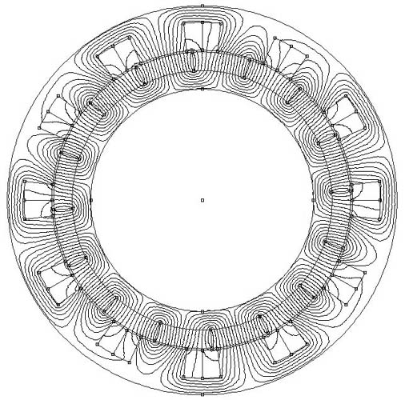
Рис. 3.1. Распределение магнитного поля в магнитной системе двигателя в момент переключения направления тока в одной из фаз. Плотность тока в каждой обмотке 3 А/мм2.
Таблица 3.1. Зависимость статического момента от угла поворота ротора.
| Угол поворота ротора, градусов |
Статический момент при плотности тока в обмотке 3 А/мм2, Н · м |
Статический момент при плотности тока в обмотке 5 А/мм2, Н · м |
| 0 (момент переключения направления тока в обмотке) |
25.57 | 42.48 |
| 1 | 26.28 | 44.83 |
| 2 | 30.67 | 50.54 |
| 3 | 33.20 | 53.55 |
| 4 | 29.87 | 50.25 |
| 5 | 27.43 | 46.95 |
| 6 | 29.23 | 47.82 |
| 7 | 27.51 | 45.09 |
| 7.5 (момент переключения направления тока в обмотке) |
25.54 | 42.45 |
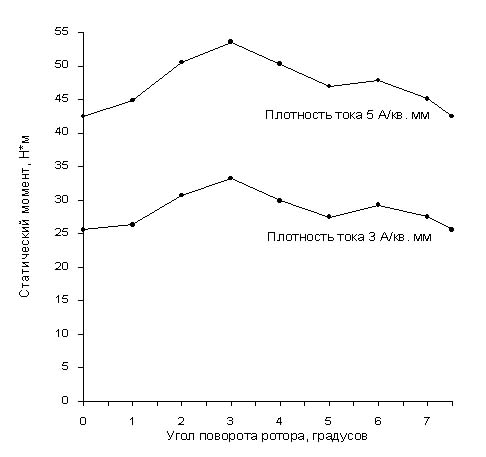
Рис. 3.2. График зависимости статического момента на валу двигателя от угла поворота ротора.
4. Расчет допустимой плотности тока в обмотках
Для провода с электрическим током удельная мощность PV (мощность на единицу объема), рассеиваемая в проводе из-за наличия электрического сопротивления и превращающаяся в тепло, может быть найдена по формуле:
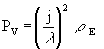
где rE - удельное электрическое сопротивление токопроводящего материала провода, l - фактор упаковки. От плотности тока в обмотке j зависит мощность тепловыделения и, соответственно, температура обмотки. Эта температура не должна превышать максимально допустимой для данной марки провода. Расчет температуры внутри обмотки и допустимой плотности тока в обмотках можно произвести методом конечных элементов [1 - 4]. На рис. 4.1 показано распределение температуры по поперечному сечению двигателя.
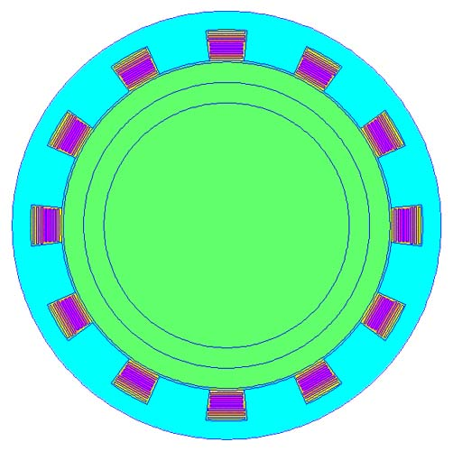
Рис. 4.1. Распределение температуры в двигателе в цветовой гамме (более высокая температура соответствует сдвигу в красную область спектра). Плотность тока в обмоточных проводах 5 А/мм2. Фактор упаковки 0.6.
При плотности тока в обмоточном проводе, равной 5 А/мм2 (если фактор упаковки равен 0.6, то плотность тока в самой обмотке будет 3 А/мм2), максимальный перегрев провода (превышение температуры провода над температурой окружающей двигатель воздушной среды) будет равен примерно 50 0C.
При плотности тока в обмоточном проводе, равной 8.3 А/мм2 (если фактор упаковки равен 0.6, то плотность тока в самой обмотке будет 5 А/мм2), максимальный перегрев провода будет равен примерно 120 0C. При этом дополнительным фактором, который следует принять во внимание, является максимально допустимая рабочая температура постоянных магнитов, для Ne-Fe-B-магнитов равная примерно 100 0C, поэтому может возникнуть необходимость принудительного охлаждения ротора двигателя.
5. Расчет активного сопротивления и индуктивности обмотки
Активное сопротивление R обмотки может быть найдено по формуле:
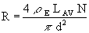
Здесь LAV - длина средней линии обмотки, N – число витков, d – диаметр обмоточного провода.
Число витков N может быть выражено следующим образом:
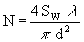
где SW – площадь окна обмотки.
Тогда:
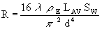
Для расчета индуктивности обмотки L воспользуемся соотношением F = LI, где F – магнитный поток, пронизывающий обмотку, I – величина тока в обмоточном проводе:
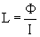
Величину тока в обмоточном проводе можно найти таким образом:
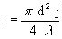
Тогда получаем выражение для индуктивности обмотки:
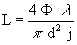
Реактивное сопротивление обмотки ZL на частоте f :
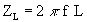
А полное сопротивление обмотки Z на частоте f:
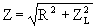
Для двигателя вышеприведенной конструкции: LAV = 0.2 м , SW = 1.39 · 10-4 м2, F = 0.001 Вб при j = 3 А/мм2, rE = 1.67· 10-8 Ом · м (обмотки намотаны медным проводом), l = 0.6 данные по расчетам активного сопротивления, индуктивности и реактивного сопротивления одной обмотки при частоте переключения тока 130 Гц (частота вращения ротора 1000 об./мин) в зависимости от диаметра обмоточного провода приведены в таблице:
Таблица 5.1. Зависимость активного, реактивного и полного сопротивления и индуктивности обмотки от диаметра обмоточного провода.
| Диаметр обмоточного провода, мм |
Активное сопротивление обмотки, Ом |
Индуктивность обмотки, мГн |
Реактивное сопротивление обмотки на частоте 130 Гц, Ом |
Полное сопротивление обмотки на частоте 130 Гц, Ом |
| 0.1 | 4516 | 25.46 | 20.80 | 4516 |
| 0.2 | 282.25 | 6.365 | 5.199 | 282.30 |
| 0.3 | 55.76 | 2.829 | 2.311 | 55.81 |
| 0.4 | 17.64 | 1.591 | 1.300 | 17.69 |
| 0.5 | 7.226 | 1.018 | 0.832 | 7.274 |
| 0.6 | 3.485 | 0.707 | 0.577 | 3.532 |
| 0.7 | 1.881 | 0.520 | 0.425 | 1.928 |
| 0.8 | 1.103 | 0.398 | 0.325 | 1.150 |
| 0.9 | 0.688 | 0.314 | 0.256 | 0.734 |
| 1.0 | 0.452 | 0.255 | 0.208 | 0.498 |
| 1.1 | 0.308 | 0.210 | 0.172 | 0.353 |
| 1.2 | 0.218 | 0.177 | 0.145 | 0.262 |
| 1.3 | 0.158 | 0.151 | 0.123 | 0.200 |
| 1.4 | 0.118 | 0.130 | 0.106 | 0.159 |
| 1.5 | 0.089 | 0.113 | 0.092 | 0.128 |
| 1.6 | 0.069 | 0.099 | 0.081 | 0.106 |
Диаметр обмоточного провода выбирается в зависимости от напряжения источника питания, прикладываемого к обмотке, таким образом, чтобы максимальная плотность тока в проводе не превышала значения, определяемого теплостойкостью изоляции (5 А/мм2 для 100 0C и 8.3 А/мм2 для 160 0C).
По вопросам расчета конкретных схем электрических двигателей обращайтесь к автору (см. раздел Контактная информация).
Ссылки:
21.09.2007
Альтернативные источники
энергии
Компьютеры и
Интернет
Магнитные поля
Механотронные системы
Перспективные
разработки
Электроника и
технология